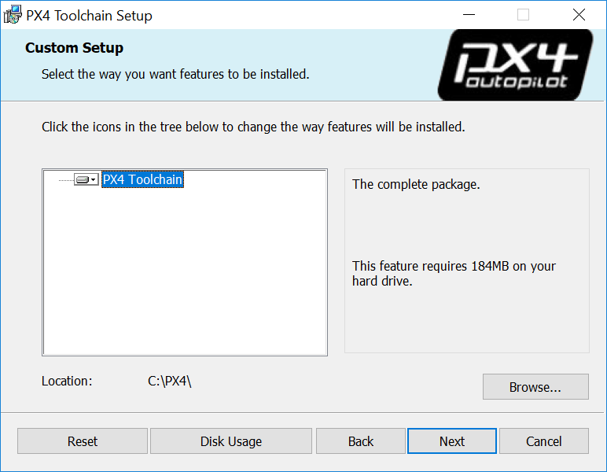

Redirecting...
This page has moved to https://docs.px4.io/master/ko/dev_setup/dev_env_windows_cygwin.html.
Click here if you are not redirected.
윈도우 Cygwin 툴체인
이 툴체인은 이식이 용이하고, 설치하기 쉬우며, 사용하기에도 간편합니다. 윈도우에서 PX4 개발에 활용하는 가장 최신의, 최상의 기능과 성능을 발휘하는 툴체인입니다.
윈도우에서 PX4 빌드에 활용하는 툴체인 중, 유일하게 공식적으로 지원하는 툴체인입니다(예: 지속 통합 시스템에서 시험해보았습니다).
툴체인에서 지원하는 기능은 다음과 같습니다:
- PX4를 NuttX 대상(픽스호크 계열 조종기)에 빌드하고 업로드합니다
- jMAVSim/SITL 모의시험 환경의 성능이 다른 윈도우 툴체인을 사용할 때보다 비약적으로 개선됩니다.
- 코드 모양새 검사, 간편 설치 관리자, 명령행 자동 완성 등의 기타 수많은 기능을 내포하고 있습니다.
이 주제에서는 환경을 다운로드하고 활용하는 방법, 필요한 경우 기능을 확장하고 업데이트하는 방법(예: 다른 컴파일러 활용)을 설명하도록 하겠습니다.
Installation Instructions
- 바로 사용할 수 있는 MSI 설치 프로그램의 최신 버전을 Github 릴리스 또는 아마존 S3 (다운로드 속도 빠름) 서버에서 받으십시오.
- 실행하고, 원하는 위치를 선택한 후, 진행하십시오:
설치 과정 마지막에서 clone the PX4 repository, build and run simulation with jMAVSim의 확인 상자에 표시하십시오(이 동작은 시작할 때 과정을 단순화합니다).
If you missed this step you will need to clone the PX4-Autopilot repository manually.
Getting Started
The toolchain uses a specially configured console window (started by running the run-console.bat script) from which you can call the normal PX4 build commands:
- 툴체인 설치 디렉터리를 탐색하십시오 (기본 위치 C:\PX4)
- run-console.bat 을 실행(두번 누르기)하여 Cygwin 배시 콘솔을 실행하십시오
Clone the PX4 PX4-Autopilot repository from within the console:
가져오는 동작은 한번이면 됩니다! clone the PX4 repository, build and run simulation with jMAVSim 옵션을 설치 관리자에서 표시했다면 이 과정을 건너뛰십시오.
# Clone the PX4-Autopilot repository into the home folder & loads submodules in parallel git clone --recursive -j8 https://github.com/PX4/PX4-Autopilot.gitYou can now use the console/PX4-Autopilot repository to build PX4.
예를 들어 jMAVSim을 실행하려면:
# Navigate to PX4-Autopilot repo cd PX4-Autopilot # Build and runs SITL simulation with jMAVSim to test the setup make px4_sitl jmavsim위 명령을 실행하면 화면이 나타납니다:

Continue next to the detailed instructions on how to build PX4 (or see the section below for more general usage instructions).
Usage Instructions
The installation directory (default: C:\PX4) contains a batch script for launching the PX4 SITL (linux like) bash console: run-console.bat
수동 설치 절에서는 왜 스크립트를 사용해야 하는지 각각의 모든 과정이 어떤 동작을 하는지 설명합니다.
The ordinary workflow consists of starting a console window by double clicking on the run-console.bat script to manually run terminal commands.
파일 감시 도구 vs 툴체인 속도
Antivirus and other background file monitoring tools can significantly slow down both installation of the toolchain and PX4 build times.
You may wish to halt them temporarily during builds (at your own risk).
윈도우와 Git의 개별 사례
윈도우 CR+LF vs 유닉스 LF 개행 문자
We recommend that you force Unix style LF endings for every repository you're working with using this toolchain (and use an editor which preserves them when saving your changes - e.g. Eclipse or VS Code). Compilation of source files also works with CR+LF endings checked out locally, but there are cases in Cygwin (e.g. execution of shell scripts) that require Unix line endings (otherwise you get errors like $'\r': Command not found.). Luckily git can do this for you when you execute the two commands in the root directory of your repo:
git config core.autocrlf false
git config core.eol lf
If you work with this toolchain on multiple repositories you can also set these two configurations globally for your machine:
git config --global ...
This is not recommended because it may affect any other (unrelated) git use on your Windows machine.
유닉스 실행 권한 비트
Under Unix there's a flag in the permissions of each file that tells the OS whether or not the file is allowed to be executed. git under Cygwin supports and cares about that bit (even though the Windows NTFS file system does not use it). This often results in git finding "false-positive" differences in permissions. The resulting diff might look like this:
diff --git ...
old mode 100644
new mode 100755
We recommend globally disabling the permission check on Windows to avoid the problem:
git config --global core.fileMode false # disable execution bit check globally for the machine
For existing repositories that have this problem caused by a local configuration, additionally:
git config --unset core.filemode # remove the local option for this repository to apply the global one
git submodule foreach --recursive git config --unset core.filemode # remove the local option for all submodules
추가 정보
Features / Issues
The following features are known to work (version 2.0):
- jMAVSim과 SITL의 빌드 및 실행은 가상 머신에서보다는 성능이 비약적으로 월등합니다(자체 윈도우 바이너리 px4.exe를 만듭니다).
- NuttX 빌드 및 업로드 (예: px4_fmu-v2 and px4_fmu-v4)
- astyle 코드 모양새 검사(지원 명령:
make format) - 명령행 자동 완성
- 시스템의 중요 부위를 건드리지 않는 설치 마법사입니다! 설치 프로그램은 시스템과 전역 경로 설정에 어떤 영향도 주지 않습니다(C:\PX4와 같은 선택한 설치 디렉터리만 수정하며 임시 로컬 경로를 사용합니다).
- 설치 마법사에서는 툴체인 폴더의 개별 설정을 유지하면서 새 버전으로 업데이트할 수 있습니다.
Omissions:
- 모의시험 환경: 가제보, ROS는 지원 안함.
- NuttX와 jMAVSim/SITL 빌드만 지원.
- 알려진 문제 (또한 보고할 문제).
Shell Script Installation
You can also install the environment using shell scripts in the Github project.
- 윈도우용 Git을 우선 설치했는지 확인하십시오.
https://github.com/PX4/windows-toolchain 저장소를 툴체인을 설치하려는 위치로 가져오십시오. 기본 위치와 이름은
Git 배시를 열고 다음을 실행하면 됩니다:cd /c/ git clone https://github.com/PX4/windows-toolchain PX4
- 모든 구성 요소를 설치하려면 새로 가져온 폴더를 찾아
toolchain폴더에 있는install-all-components.bat스크립트를 두 번 누르십시오. 데이터 전송 용량과 디스크 공간을 아끼려 일부 요소만 필요하다면 별도의install-all-components.bat구성요소 폴더를 찾아 개별적으로 받을 구성요소의 install-XXX.bat 스크립트를 실행하면 됩니다. - 시작하기 (또는 사용 방법)으로 계속 진행하십시오
Manual Installation (for Toolchain Developers)
This section describes how to setup the Cygwin toolchain manually yourself while pointing to the corresponding scripts from the script based installation repo. The result should be the same as using the scripts or MSI installer.
툴체인은 관리 대상이므로 방법 설명에 있어 앞으로 바뀔 모든 세부사항은 다루지 않습니다.
- C:\PX4, C:\PX4\toolchain, C:\PX4\home 폴더를 만드십시오.
- 공식 Cygwin 웹사이트에서 setup-x86_64.exe Cygwin 설치 파일을 다운로드하십시오
- 다운로드한 설치 파일을 실행하십시오
- 마법사 프로그램에서 설치할 대상 폴더 C:\PX4\toolchain\cygwin64를 선택하십시오.
기본 Cygwin 기반과 다음 추가 꾸러미의 새 버전을 설치하도록 선택하십시오.
분류:꾸러미 명칭
- Devel:cmake (3.3.2 에서 deprecated 경고가 없고, 3.6.2 는 동작하지만 경고는 뜹니다)
- Devel:gcc-g++
- Devel:gdb
- Devel:git
- Devel:make
- Devel:ninja
- Devel:patch
- Editors:xxd
- Editors:nano (vim을 사용하지 않는 경우)
- Python:python2
- Python:python2-pip
- Python:python2-numpy
- Python:python2-jinja2
- Python:python2-pyyaml
- Python:python2-cerberus
- Archive:unzip
- Utils:astyle
- Shells:bash-completion
Web:wget
이 목록에 없는 다른 수많은 꾸러미는 빌드를 깨먹는 요소이므로 가능하면 선택하지 마십시오.
이 과정은 cygwin64/install-cygwin-px4.bat 스크립트에서 수행합니다.
run-console.bat파일과setup-environment.bat파일(배치 스크립트)를 작성하거나 복사하십시오.미리 준비한 배치 스크립트로 모든 개발 도구를 받아 시작하는 이유는 로컬에 이식이 용이한 Cygwin 환경을 툴체인 폴더에 넣고 사용할 프로그램의 시작 단계에서 우선 설정하기 때문입니다. setup-environment.bat 스크립트를 언제든 우선 호출하고, 콘솔 같은 원하는 프로그램을 그 다음에 실행합니다.
setup-environment.bat 스크립트는 작업 환경 루트 디렉터리의 환경 변수
PX4_DIR, 전체 바이너리 경로PATH, 유닉스 환경의 계정 루트 디렉터리HOME을 설정합니다.(run-console.bat을 두번 눌러) Cygwin 툴체인 콘솔을 열고 다음 명령을 입력하여 필요한 파이썬 꾸러미를 설치 과정에 추가하십시오.
pip2 install toml pip2 install pyserial pip2 install pyulog
> **Note** 이 과정은 [cygwin64/install-cygwin-python-packages.bat](https://github.com/MaEtUgR/PX4Toolchain/blob/master/toolchain/cygwin64/install-cygwin-python-packages.bat) 스크립트에서 수행합니다.
윈도우용 바이너리 ARM GCC compiler를 zip 압축 파일로 다운로드한 후
C:\PX4\toolchain\gcc-arm폴더에 내용물을 풀어 넣으십시오.이 과정은 gcc-arm/install-gcc-arm.bat 스크립트에서 수행합니다.
JDK를 설치하십시오:
- 오라클 또는 AdoptOpenJDK에서 Java 14를 다운로드하십시오.
- 바이너리가 바로 들어있는 이식이 용이한 꾸러미가 없어 설치해야합니다.
- 바이너리를 찾아 C:\PX4\toolchain\jdk로 이동/복사하십시오.
윈도우 시스템에서 키트 설치를 제거할 수 있습니다. 툴체인에는 바이너리만 필요합니다.
이 과정은 jdk/install-jdk.bat 스크립트에서 수행합니다.
윈도우용 Apache Ant를 zip 압축 파일 바이너리로 다운로드하고
C:\PX4\toolchain\apache-ant폴더에 압축을 해제하십시오.다운로드한 내용의 폴더 안에 추가 폴더 구성을 갖추었는지(없는지)여부를 확인하십시오.
툴체인이 있는 위치는 apache-ant/install-apache-ant.bat 입니다.
genromfs를 다운로드하고 빌드한 다음 PATH에 추가하십시오:
- 소스코드를 C:\PX4\toolchain\genromfs\genromfs-src 폴더에 다음 명령으로 가져오십시오
cd /c/toolchain/genromfs git clone https://github.com/chexum/genromfs.git genromfs-src
- 소스코드를 C:\PX4\toolchain\genromfs\genromfs-src 폴더에 다음 명령으로 가져오십시오
다음 명령으로 컴파일하십시오:
cd genromfs-src make allgenromfs.exe 결과 바이너리 파일을 한단계 폴더 위인 C:\PX4\toolchain\genromfs에 복사하십시오
툴체인이 있는 위치는 genromfs/install-genromfs.bat 입니다.
설치한 모든 구성요소의 모든 바이너리 폴더가 setup-environment.bat 스크립트에서 설정한
PATH환경 변수에 제대로 들어갔는지 확인하십시오.